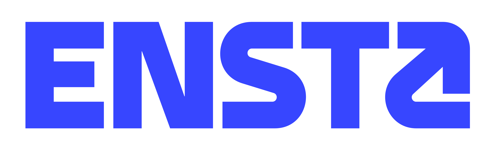

jonathan viquerat
I am currently an R&D engineer in the Lumerical team at Ansys. In the past, I have worked on a variety of things, including numerical electromagnetics, deep reinforcement learning, graph neural networks, as well as gradient-free and gradient-based optimization.
Experience
 2025 — Present
2025 — Present
R&D engineer (Ansys - Lumerical)
Development of numerical electromagnetics software
2018 — 2025
Research engineer (Mines Paris - CEMEF)
Machine learning for CFD applications
 2012 — 2015
2012 — 2015
PhD in applied mathematics (INRIA)
Discontinuous Galerkin time-domain methods for nano-optics

2009 — 2012Engineering degree (ENSTA ParisTech)
Specialized in applied mathematics